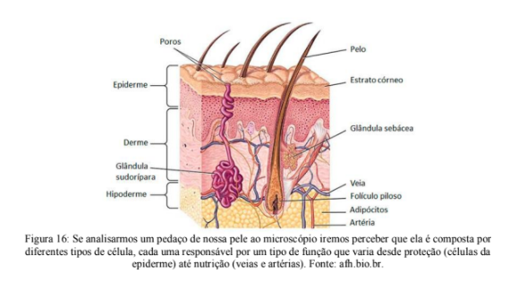
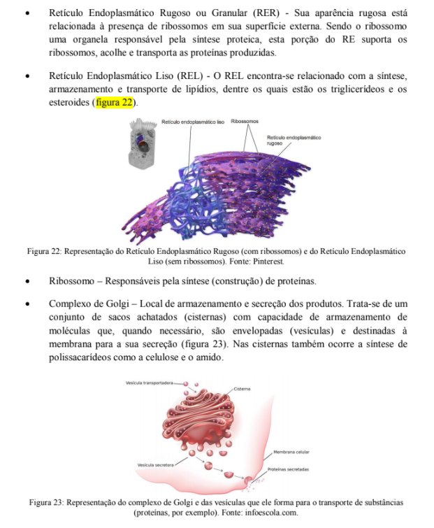
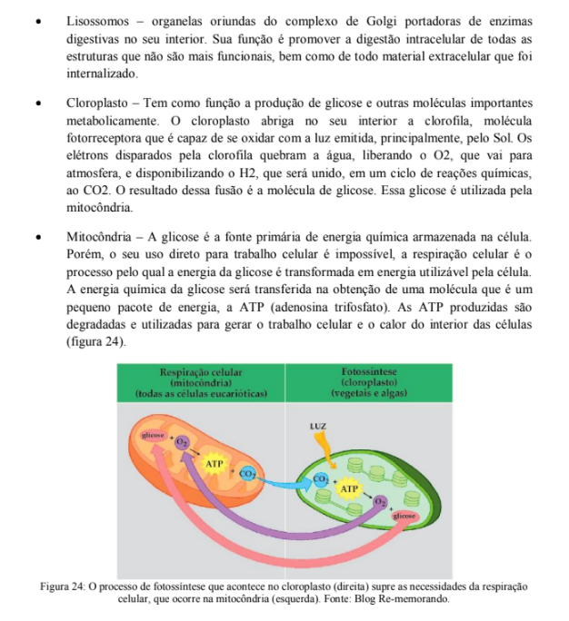
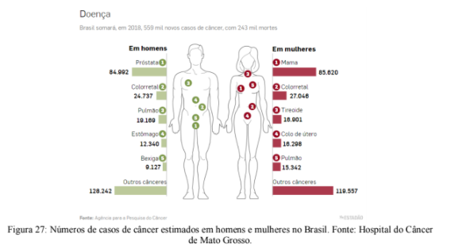

Capítulo 2
RELACIONANDO A INDÚSTRIA MOVELEIRA COM A ESTRUTURA DAS CÉLULAS
QuestãoQuando pensamos sobre o tipo de madeira a ser utilizado na construção de um móvel percebemos que essa escolha está totalmente vinculada ao uso que ele terá. Madeiras macias são ótimas para esculpir e moldar, já as madeiras duras são bastante resistentes e podem fazer parte da estrutura que sustenta uma casa, por exemplo (figura 15). Pergunto a você: o que faz com que uma madeira seja macia ou dura?

Contextualizando
Assim como uma casa é construída por materiais pequenos organizados e unidos da forma apropriada (tijolos, cimento, madeira, etc.) também os corpos dos seres vivos são construídos a partir do arranjo de partes menores. Podemos dizer que as células são os tijolos que constroem os corpos, seja de animais, plantas, bactérias, fungos, etc. Entretanto, esses "tijolos" não são todos iguais! Cada tipo de célula tem uma função específica, isso significa que para manter os tecidos e órgãos são necessários diferentes tipos de células interagindo (figura 16).
A nossa pele é um bom exemplo. Quando olhamos para ela é difícil imaginar a quantidade de células com formas e funções diferentes que a compõem, mas ao microscópio é possível entender que existem células que dão sustentação, que produzem a queratina que nos protege, células com terminações nervosas que nos permitem sentir aquilo que nos toca, células que formam as glândulas que liberam suor, etc.

Nas plantas, por exemplo, a fotossíntese é realizada por células repletas de clorofila (capaz de captar a luz do Sol), já a sustentação do corpo é realizada por células que acumulam lignina, uma molécula capaz de conferir impermeabilidade e resistência (figura 17). Em geral, quanto maior o peso da planta, mais células são lignificadas (acumulam lignina) e mais dura é a madeira.

VOCÊ JÁ PENSOU SOBRE ISSO TAMBÉM?
O princípio de organização dos seres vivos é o mesmo, seja qual for a espécie, alguns se organizam em formas mais complexas e outros em formas mais simples.
Um organismo tem seu corpo dividido em vários sistemas que se ocupam da locomoção, digestão, respiração, enfim, de tudo que acontece. Cada sistema possui órgãos especializados, que por sua fez são construídos a partir de diferentes tecidos. Os tecidos, por sua vez, nada mais são do que conjuntos de células que se organizam para executar determinada tarefa, mas para que isso aconteça elas estão equipadas com diversas organelas (figura 18).

As organelas são como pequenas máquinas, sem elas, a "fábrica" (célula) não tem condições de funcionar.
(RE)CONSTRUINDO CONHECIMENTOSA célula é a unidade fundamental e funcional do ser vivo. É dividida em 4 partes básicas: a membrana plasmática, a matriz citoplasmática, as organelas e o material genético.
A membrana plasmática pode ser comparada às paredes de uma construção, ela delimita o espaço da célula e determina o que pode entrar ou sair. Todas as células possuem essa membrana que é composta por proteínas ligadas a gorduras (lipoproteínas).
PARA SABER MAIS...
A estrutura da membrana plasmática é extremamente complexa. Ela é uma bicamada lipídica, ou seja, a membrana das células está organizada em duas camadas de proteínas ligadas a lipídios (gorduras). O colesterol (que em altas concentrações no corpo pode causar doenças sérias) é um dos lipídios que compõem a membrana plasmática. Espalhadas pela membrana estão vários tipos diferentes de proteínas que podem atravessar as duas camadas (nesse caso conectam o lado externo com o lado interno da célula) ou não (figura 19). Essas proteínas podem estar ligadas a carboidratos e são as responsáveis por reconhecer algumas moléculas (como hormônios) e sinalizar o início de alguns processos das células.

Consequentemente, só entra na célula aquilo que a membrana permite, dizemos que a membrana plasmática possui permeabilidade seletiva.
O estudo dessa característica das células proporcionou o desenvolvimento de várias tecnologias, como materiais especiais para a filtragem de água.
A matriz citoplasmática é o fluido composto por água em que uma enorme quantidade de substâncias estão dissolvidas, como aminoácidos, glicose, pequenas proteínas, glicerol, ácidos graxos, íons e sais minerais. Nela estão as proteínas que sustentam a célula (o citoesqueleto) além das organelas e o material genético.
As células não são como balões cheio de água, existem várias proteínas que agem como cabos de aço e mantém sua forma (figura 20). Além de conservar a forma, o citoesqueleto também organiza a movimentação de organelas e vesículas dentro da célula.

As organelas citoplasmáticas são as estruturas responsáveis pelo funcionamento metabólico da célula. Local onde ocorre a produção de moléculas destinadas à construção da estrutura celular e também ao metabolismo energético (figura 21).

O material genético das células é onde todas as informações estão guardadas, dede como produzir insulina até como criar células inteiras. Ele pode estar solto no citoplasma (nos seres conhecidos como procariontes, por exemplo bactérias) ou guardado em um compartimento chamado de núcleo da célula (nos seres conhecidos como eucariontes, por exemplo, humanos).
O material genético das células é onde todas as informações estão guardadas, dede como produzir insulina até como criar células inteiras. Ele pode estar solto no citoplasma (nos seres conhecidos como procariontes, por exemplo bactérias) ou guardado em um compartimento chamado de núcleo da célula (nos seres conhecidos como eucariontes, por exemplo, humanos).
ORGANELAS
As organelas citoplasmáticas são as estruturas responsáveis pela realização do metabolismo celular. Conforme a especialização da célula e o organismo do qual faz parte, um conjunto diferente de organelas são encontradas.

De onde vêm as células? Uma célula sempre vem de outra pré-existente através do processo de divisão celular. Existem dois tipos de divisão: aquela que cria uma cópia idêntica (mitose) e aquela divide o material genético ao meio (meiose).
A mitose (figura 25) acontece para substituir uma célula que morreu e também durante o crescimento do corpo. Já a meiose forma as células reprodutivas (espermatozoides e óvulos, por exemplo).

VOCÊ SABIA?
Durante a divisão por meiose pode acontecer a permuta genética. Quando dois cromossomos trocam partes entre si (observe a figura 25 no topo a direita). A consequência disso é a possibilidade de surgir variações novas nas características dos seres vivos, que são a matéria- prima para a evolução biológica.
Erros na divisão celular podem ter consequências desastrosas, agora que você sabe como a célula se divide, você também compreenderá que o câncer é um problema de mitose. Uma mitose desordenada. Vários tipos de câncer, principalmente os hereditários, são consequência de problemas em genes responsáveis pela produção de proteínas que controlam quando a mitose deve iniciar. Uma vez que essas proteínas não sejam capazes de atuar, a célula sairá de uma divisão indo direto para a próxima, assim, as células passam a se multiplicar desordenadamente podendo dar origem a tumores (figura 26).

Leia o que o INCA (Instituto Nacional do Câncer) tem a dizer sobre esse assunto:
Câncer é o nome dado a um conjunto de mais de 100 doenças que têm em comum o crescimento desordenado (maligno) de células que invadem os tecidos e órgãos, podendo espalhar-se (metástase) para outras regiões do corpo. Dividindo-se rapidamente, estas células tendem a ser muito agressivas e incontroláveis, determinando a formação de tumores (acúmulo de células cancerosas) ou neoplasias malignas. Por outro lado, um tumor benigno significa simplesmente uma massa localizada de células que se multiplicam vagarosamente e se assemelham ao seu tecido original, raramente constituindo um risco de vida.
Os diferentes tipos de câncer correspondem aos vários tipos de células do corpo. Por exemplo, existem diversos tipos de câncer de pele porque a pele é formada de mais de um tipo de célula. Se o câncer tem início em tecidos epiteliais como pele ou mucosas ele é denominado carcinoma. Se começa em tecidos conjuntivos como osso, músculo ou cartilagem é chamado de sarcoma.
Outras características que diferenciam os diversos tipos de câncer entre si são a capacidade de invadir tecidos e órgãos vizinhos ou distantes (metástase).
AÇÃO E REFLEXÃO
O infográfico abaixo (figura 27) apresenta dados sobre a incidência de câncer em brasileiras e brasileiros.
Identifique quais são os tipos de câncer mais frequentes em mulheres e homens. Você conhece formas de preveni-los?
Identifique quais são os tipos de câncer mais frequentes em mulheres e homens. Você conhece formas de preveni-los?
Você pode se inspirar na figura 28!
O QUE APRENDI